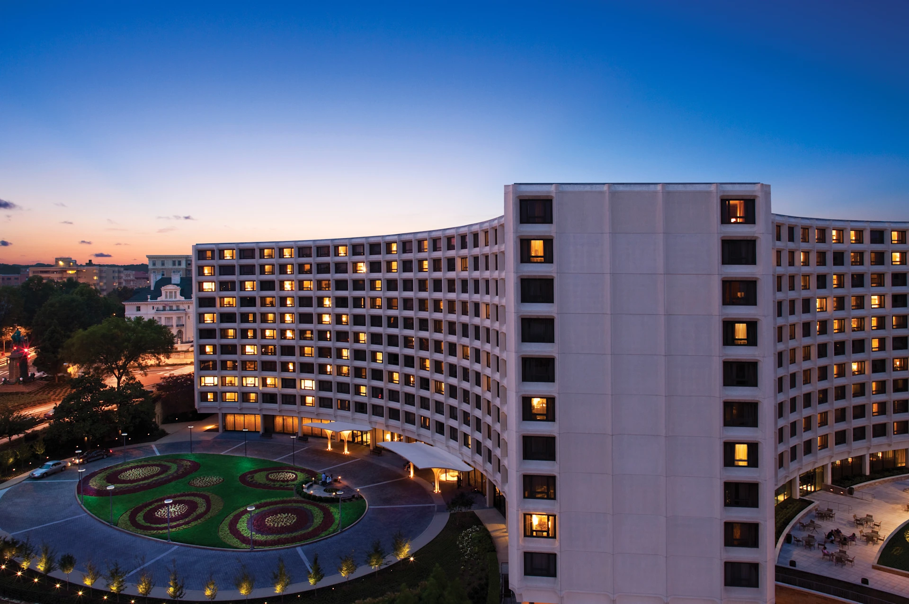

11. July - Saturday
Arrival buffer day for the long-haul trip from Ljubljana (LJU) to Washington, DC. The goal is to land before ISMB starts on Sunday, recover from the flight, and avoid making poster logistics depend on same-day international travel.
Flight planning reference
Use July 11 as the baseline arrival day. July 10 is an even calmer option if the price difference is small or if poster setup, jet lag, and conference registration feel like too much for one weekend.
Search the useful one-stop routings
Start with Lufthansa/United via Frankfurt or Munich, Swiss via Zurich, and Turkish via Istanbul. Compare IAD first, then DCA and BWI only if the total timing and ground transfer still make sense.
Land in Washington and keep the evening simple
Plan for immigration, luggage, transit to the hotel, food, hydration, and sleep. Do not schedule anything that would be painful after a transatlantic flight.
Conference prep reset
Charge devices, organize poster materials, save offline copies of the poster PDF, and confirm the Sunday registration plan at the Washington Hilton.
12. July - Sunday

ISMB 2026 opens at the Washington Hilton, 1919 Connecticut Ave NW. Sunday is the pre-conference/tutorial day, with registration, DREAM, the Student Council Symposium, tutorials, Career Fair, the conference welcome, Richard Durbin's keynote, and the Welcome Networking Reception.

Getting there — Ljubljana to the Washington Hilton
Flight. There are no nonstop flights from Ljubljana to the US, so the cleanest routing is LJU → Frankfurt (FRA) or Munich (MUC) → Washington Dulles (IAD) — one stop, roughly 13-15 hours gate to gate. Ticketing it as a Star Alliance itinerary (Lufthansa feeder plus United transatlantic) lets you use the ISMB United discount link. If you route via Paris (CDG) on SkyTeam instead, book through Delta with meeting code NM3UP. IAD is the recommended arrival airport — DCA is closer but mostly domestic, and BWI adds an extra train transfer.
IAD to the venue by train. Dulles has its own Metro station on the Silver Line, linked to the main terminal by a covered walkway. Ride the Silver Line toward downtown to Metro Center (about 55 min), transfer to the Red Line toward Shady Grove, and go two stops to Dupont Circle. Leave by the north / Q Street exit and walk about 0.5 mi (10 min) north on Connecticut Ave NW to the Washington Hilton. Total roughly 1 h 15 to 1 h 30; about $6-8 with a SmarTrip card or a contactless tap.
IAD to the venue by car. Taxi or rideshare is about 26 miles and 35-50 min depending on traffic, roughly $45-75 — the simplest option after a long-haul flight.
Arrive a day early. Transatlantic flights from Europe land in DC in the afternoon or evening, and July 12 programming starts at 08:00. Flying in on Saturday, July 11, gives you a buffer for the 6-hour time change and for poster setup.
Conference source links
Poster presenter checklist
Before travel: finish the physical poster, upload the required file(s), save a backup PDF locally, add a QR/contact path, and leave the exact assigned poster session unbooked until ISMB confirms the number and session.
Registration opens for morning tutorials and SCS
Registration desk is in the Terrace Foyer. The registration page lists Sunday 08:00-10:00 for morning/full-day tutorials and the Student Council Symposium, then 11:30-19:30 general hours.
DREAM, Student Council Symposium, and morning tutorials
Morning blocks include DREAM, SCS, and tutorials such as Agentic AI systems for in silico team science, From Trees to Networks, Computational Network Analysis of Omics Data, Quantum Computing for Multi-omics analyses, and metagenomic sequence analysis.
Coffee break
Short break between morning tutorial blocks.
Lunch break on your own
Registration FAQ says lunches are not included, so plan nearby Dupont/Kalorama lunch or bring something easy.
Afternoon tutorials, DREAM, SCS, and Youth Bioinformatics Symposium
Afternoon blocks continue tutorials and DREAM. The Youth Bioinformatics Symposium runs until 17:15. Coffee break is listed 16:00-16:15.
Career Fair in Columbia and poster logistics check
The Career Fair page and abridged agenda place this in the Exhibition Area / Columbia during the late afternoon. Since your poster is part of the trip, use this window or registration time to verify the poster board location, number, pin/tape setup, and whether your assigned session has shifted.
Conference welcome and distinguished keynote: Richard Durbin
Richard Durbin, University of Cambridge, gives the opening distinguished keynote in International Ballroom - Center. Talk: More applications of the Burrows-Wheeler transform in computational genomics.
Welcome Networking Reception
Welcome Networking Reception in Columbia Ballroom.
13. July - Monday
First full ISMB conference day at the Washington Hilton. Main rhythm: morning keynote, poster/exhibitor coffee hour, two track blocks, lunch on your own, afternoon track block, second poster/exhibitor coffee hour, final track block, then an invite-only President's Reception.
Registration desk: Terrace Foyer, 07:30-18:30.
Presenter priority: keep both Columbia Ballroom poster/exhibitor blocks protected until your exact poster session is known.
Morning welcome and distinguished keynote: Olga Troyanskaya
Olga Troyanskaya, Princeton University, ISCB 2026 Innovator Award Winner. Talk: Toward Predictive Models of Human Biology and Disease. Room: International Ballroom - Center.
Caffeinate and Connect with Posters and Exhibitors
Poster and exhibitor time in Columbia Ballroom. If this becomes your assigned poster session, treat it as presentation time rather than a browsing block.
Track sessions and Tech Talks
Tracks listed for the morning block: HitSeq, iRNA, RegSys, CompMS, NIH/ODSS, Microbiome, TextMining, CSi, BOKR, Function, and Tech Talks.
Lunch break on your own
Lunch is not included with registration. Keep this flexible until travel/accommodation plans are set.
Afternoon track sessions and Tech Talks
Continuation of HitSeq, iRNA, RegSys, CompMS, NIH/ODSS, Microbiome, TextMining, CSi, BOKR, Function, and Tech Talks.
Caffeinate and Connect with Posters and Exhibitors
Second Columbia Ballroom poster/exhibitor block. Keep a small buffer before and after for poster setup, water, business cards/contact QR, and follow-up notes.
Late afternoon tracks
Tracks listed: HitSeq, iRNA, RegSys, NIH/ODSS, Microbiome, TextMining, CSi, BOKR, Function, and Tech Talks.
President's Reception
Invite only.
14. July - Tuesday
Tuesday centers on the Partha P Majumder keynote, track sessions, poster/exhibitor coffee blocks, and Success Circles in the evening. The official green challenge for Tuesday is Sustainable Clothing.
Registration desk: Terrace Foyer, 07:30-18:30.
Presenter priority: re-check your poster number before putting anything up; the ISMB poster page notes that poster numbers may change.
Morning welcome, Fellows introduction, and keynote: Partha P Majumder
Partha P Majumder, John C. Martin Centre for Liver Research & Innovations. Room: International Ballroom - Center.
Caffeinate and Connect with Posters and Exhibitors
Poster and exhibitor time in Columbia Ballroom. If assigned here, prioritize presenting and use quiet moments to invite people into the later track sessions you care about.
Morning tracks, publication session, and Tech Talks
Tracks listed: HitSeq, iRNA, RegSys, Publication Session, BioInfoCore, Microbiome, SysMod, BioVis, BOKR/BOSC, Function, and Tech Talks.
Lunch break on your own
Use the longer lunch window to reset before the denser afternoon blocks.
Afternoon tracks and workshops
Tracks and sessions listed: HitSeq, iRNA, RegSys, Industry Workshop, BioInfoCore, NetBio, SysMod, BioVis, BOSC, BOKR/Function, and Quantum4Life Sciences.
Caffeinate and Connect with Posters and Exhibitors
Second Columbia Ballroom poster/exhibitor block. Good fallback slot for targeted poster networking if your own assigned time is another day.
Late afternoon tracks and Career Symposium
Tracks listed: HitSeq, iRNA, RegSys, Career Symposium, BioInfoCore, NetBio, SysMod, BioVis, BOSC, Function, and BOKR.
Success Circles
Reinvented networking in International Terrace, grouping participants into small circles led by facilitators. The Success Circles page notes that registration is required and attendance is limited.
15. July - Wednesday
Wednesday starts early with the ISCB Town Hall, then Marinka Zitnik's keynote, full track programming, and optional evening activities listed on the ISMB site.
Registration desk: Terrace Foyer, 07:30-18:30.
Presenter priority: keep energy for poster conversations; Wednesday has an early start and evening options, so avoid making the day too packed if your session lands here.
ISCB Town Hall
Town Hall block before the main morning welcome.
Morning welcome and distinguished keynote: Marinka Zitnik
Marinka Zitnik, Harvard Medical School, ISCB 2026 Overton Prize Winner. Room: International Ballroom - Center.
Caffeinate and Connect with Posters and Exhibitors
Poster and exhibitor time in Columbia Ballroom. If this is your presentation window, arrive early enough to check the board, open your backup PDF, and settle before traffic builds.
Morning tracks including ICBO
Tracks listed: MLCSB, TransMed, 3D, NetBio, WEB, GenCompBio, EvolCompGen, VarI, BOSC, CAMDA, and ICBO.
Lunch break on your own
Keep this open until hotel and sightseeing plans are added.
Afternoon tracks including ICBO
Continuation of MLCSB, TransMed, 3D, NetBio, WEB, GenCompBio, EvolCompGen, VarI, BOSC, CAMDA, and ICBO.
Caffeinate and Connect with Posters and Exhibitors
Second Columbia Ballroom poster/exhibitor block. Keep this open for presenting or for follow-up chats with people who asked to reconnect.
Late afternoon tracks including ICBO
Final Wednesday track block.
Optional evening activities
Other Activities lists Social Networking for Network Biologists at City Tap House Dupont from 19:00-21:00, and Beetlejuice! at The National Theatre at 19:30.
16. July - Thursday
Final ISMB conference day. Registration desk closes earlier, the track programme runs through the afternoon, and the conference closes with Carlos Bustamante's keynote and closing ceremonies.
Registration desk: Terrace Foyer, 07:30-12:00.
Presenter priority: if your poster remains up through Thursday, plan a calm removal/check-out moment before the closing keynote.
Morning tracks
Tracks listed: MLCSB, 3D, Bioinformatics in the USA, Education, GenCompBio, EvolCompGen, Equity and Diversity in CompBio Research, CAMDA, and ICBO.
Caffeinate and Connect with Posters and Exhibitors
Final full poster/exhibitor coffee block in Columbia Ballroom. If assigned here, this is the last high-traffic chance for your poster pitch.
Late morning tracks
Tracks listed: MLCSB, 3D, Bioinformatics in the USA, Education, GenCompBio, EvolCompGen, Pathogen Data Network Event, CAMDA, and ICBO.
Lunch break on your own
Last long midday break before the closing afternoon.
Final track sessions
Tracks listed: MLCSB, 3D, Bioinformatics in the USA, Education, GenCompBio, EvolCompGen, CAMDA, and ICBO.
Caffeinate and Connect with Posters and Exhibitors
Short final break before closing. Use it for final poster conversations, taking down materials if allowed, and capturing follow-up names while they are fresh.
Distinguished keynote: Carlos D. Bustamante and closing ceremonies
Carlos D. Bustamante, Founder and CEO of Galatea Bio. Room: International Ballroom - Center, followed by closing ceremonies.
17. July - Friday
The day after ISMB: keep this lighter, then take the train from Washington, DC to Baltimore, check into a Baltimore hotel, and go to Morgan Wallen w/ Brooks & Dunn at M&T Bank Stadium. The plan is to sleep in Baltimore after the show.
Concert reference
Ticketmaster note from the pasted page: resale marketplace is not the primary ticket provider, resale tickets can exceed face value, and prices include fees before taxes. Check the venue or primary ticket path before buying resale.
Post-conference reset
Sleep in, organize poster materials, and back up contact notes from ISMB. Pack for a one-night Baltimore stay so conference/poster gear does not have to go into the stadium.
Train: Washington, DC to Baltimore
Use Amtrak or MARC from Washington Union Station toward Baltimore Penn Station — about 35-45 min on Amtrak (Northeast Regional) or roughly 1 hour on the MARC Penn Line. Leave a generous buffer for Friday travel, hotel check-in, food, and getting from the station or hotel to M&T Bank Stadium.
Check into Baltimore hotel
Drop luggage and poster/conference materials before the show. A hotel near the stadium, Inner Harbor, Camden Yards, or Penn Station keeps the evening easier.
Arrive near M&T Bank Stadium
Build in time for food, stadium entry, mobile-ticket checks, and bag policy/security. Re-check official event details before the day, especially gate times and permitted bag size.
Morgan Wallen w/ Brooks & Dunn
Concert at M&T Bank Stadium in Baltimore. Visible pasted resale options included upper sections such as 505 and 521, starting around $161 before taxes.
Sleep in Baltimore
Return to the Baltimore hotel after the concert. Save the train back to Washington, DC for Saturday when it is calmer.
18. July - Saturday
Post-concert positioning day: wake up in Baltimore, take the train back to Washington, DC, and keep the rest of the day flexible for a flight, hotel move, or one last low-key DC evening.
Baltimore return plan
Baltimore checkout
Have breakfast, pack concert and conference materials, and check out without rushing. Confirm the train schedule before leaving the hotel.
Train: Baltimore to Washington, DC
Use Amtrak or MARC back toward Washington Union Station — about 35-45 min on Amtrak or roughly 1 hour on the MARC Penn Line. MARC runs a reduced weekend schedule, so Amtrak is the more reliable choice for the Saturday return. Keep the schedule flexible enough that a delayed train does not collide with a tight international flight.
Position for the next step
If flying home Saturday evening, continue from Union Station toward the airport with plenty of buffer. If flying Sunday, use this as a relaxed DC lodging or sightseeing day.